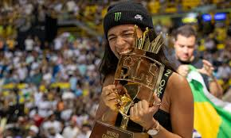
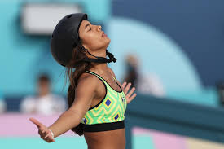

Nos Jogos Olímpicos de Tóquio 2020, em julho de 2021, uma garota radiante de 13 anos com rosto jovem e aparelho ortodôntico morde
orgulhosamente uma medalha de prata.
A alegria contagiante e o entusiasmo desenfreado de Rayssa Leal brilharam depois de se tornar uma das mais jovens medalhistas olímpicas da história.
“É como se eu estivesse em um parque de diversões e apenas me divertindo”, disse ela ao Olympics.com, refletindo sobre sua alegria de viver
e mentalidade vencedora. “Porque estou fazendo o que gosto e o que sempre sonhei fazer. Então, só de ir aos campeonatos e estar com minha família e meus
amigos é ótimo”, explicou.

Nascida no Brasil em 2008, Leal ganhou destaque global através do poder dos vídeos virais e das mídias sociais.
Um pequeno clipe de Leal, de sete anos, executando perfeitamente um heelflip descendo uma escada enquanto usava um vestido azul brilhante
como parte de uma fantasia de princesa fada cativou o público nas plataformas de mídia social. A megaestrela do skate Tony Hawk juntou-se ao frenesi
da mídia social,elogiando a jovem prodígio e elevando sua fama online.

Além do burburinho online, ela provou ser uma concorrente séria. Com apenas 11 anos, ela fez história como a mais jovem skatista de street
a vencer uma final feminina no Street League Skateboarding World Tour em Los Angeles, superando a então número um do mundo, Pamela Rosa.
Após sua estreia nos X-Games em 2019, o grande avanço de Leal veio nos adiados Jogos Olímpicos de Tóquio 2020, onde ela superou as
probabilidades de levar a prata no evento de skate street.
Em 2022, a estrela brasileira garantiu seu primeiro título de X-Games, vencendo a prova de street do X-Games Chiba. Ela então varreu a série Street
League Skateboarding, completando seu triunfo diante de uma exuberante torcida no Rio de Janeiro.